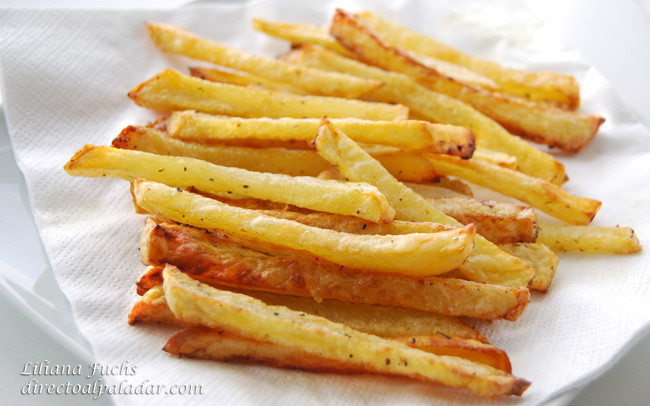

Recetas de patatas fritas

- Dificultad: Fácil
- Raciones: 2-3
- Tiempo: 25 min
- Coste: Bajo
| Ingredientes | Cantidad | Notas |
|---|---|---|
| Patatas | 300 g (3-4 ud.) | Para freír |
| Ajo | 1-2 dientes | Opcional |
| Aceite de Oliva | 500 ml | Freír |
| Sal y pimienta | Al gusto | Al final |
Elaboración
Las patatas fritas son unos de los acompañamientos más populares y deliciosos. Pela las patatas y córtalas en tiras del grosor deseado. Calienta el aceite a fuego medio-alto. Cuando esté bien caliente, añade las patatas (y los ajos si los usas) en todas, fríelas hasta que estén doradas y crujientes, escurre sobre papel y sazona al gusto.